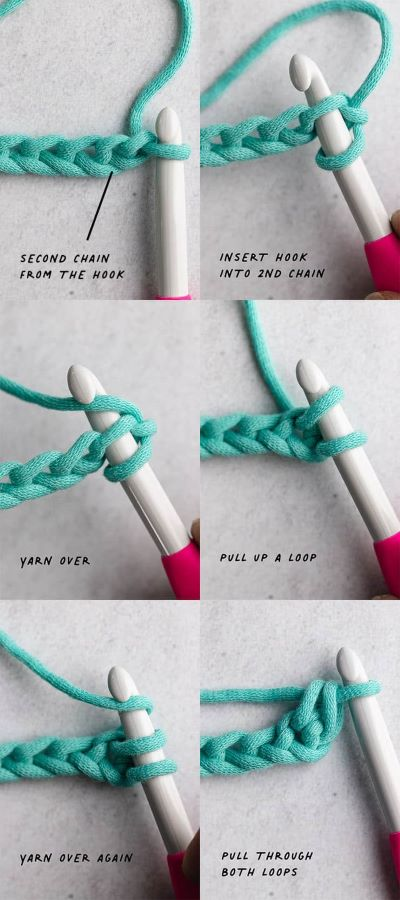

AI? GOODBYE!
Unfortunately, many people fall for AI. It's important to support REAL PEOPLE and not someones one sentence
picture generator. AI destroys the whole point of art and crushes the hopes and dreams of all artists everywhere.
DON'T SUPPORT AI!!
Looking for AI is not something I can really teach you, other than if it looks too beautiful, it's probably a scam.
You'll get to a point where you can identify AI with a single glance with time.
BASIC STITCHES
To start crocheting, you need a good understanding of the basics. You need to know how to do basic stitches.
Click
HERE to watch a video showing and explaining
a bunch of necessary stitches.
Here's a guide on how to do a
single crochet.
